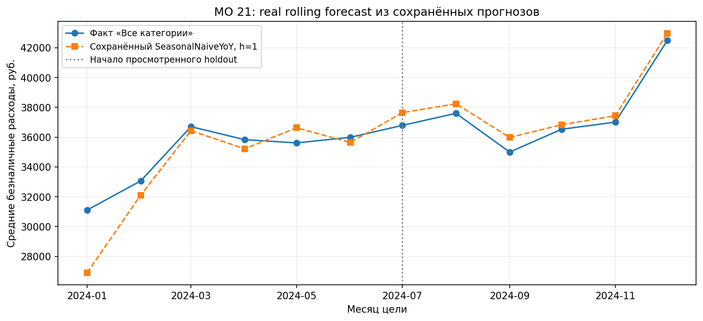
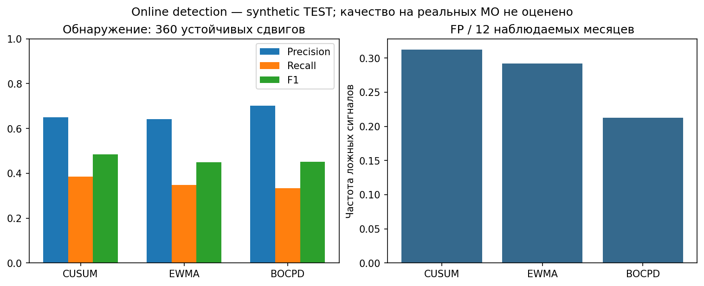
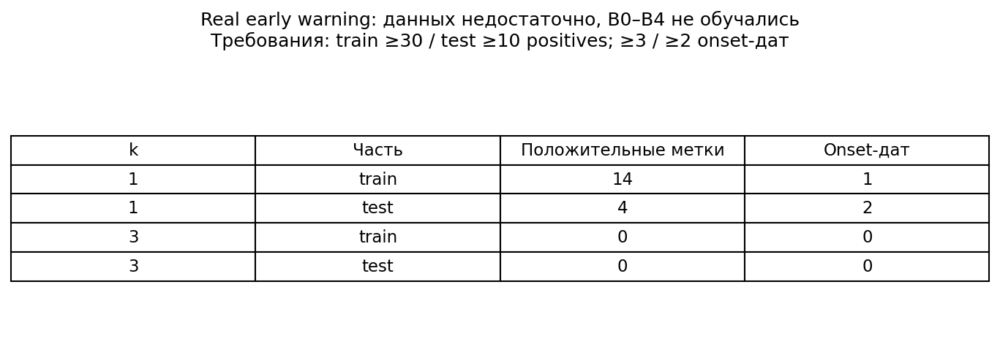
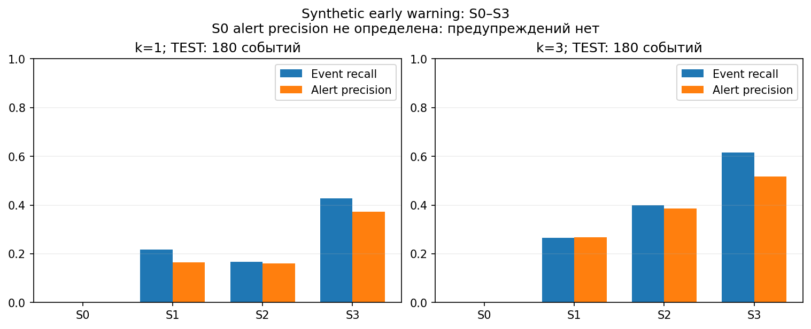

СберИндекс · муниципальная панель
Forecasting, detection и проверка возможности early warning на короткой месячной истории.
Реальные данные · диагностика · отдельный synthetic benchmark
Постановка задачи
Какими будут расходы через 1 / 3 / 6 / 12 месяцев?
MAE — средняя абсолютная ошибка прогноза в рублях.
Началось ли устойчивое изменение ошибки прогноза?
Online — последовательный сигнал.
Offline — ретроспективная граница.
Начнётся ли событие в следующие k месяцев?
До начала изменения.
Event recall — доля предупреждённых событий; lead time — месяцы упреждения.
Реальные данные и temporal protocol
Январь 2023 — декабрь 2024
Полная муниципальная панель
Оцениваемые МО forecasting pilot
«Все категории» — средние безналичные расходы жителей, номинальные рубли.
Архитектура решения
Offline detection не входит в early-warning features. Residuals — факт минус прогноз SeasonalNaiveYoY по доступной истории.
На реальных данных классификатор не обучался: мало независимых дат и меток. Синтетическая проверка механизма выполнена отдельно.
Forecasting · real pilot holdout
MAE macro, рубли · одинаковые прогнозные случаи · меньше — лучше
| Стратегия | h=1 | h=3 | h=6 | h=12 |
|---|---|---|---|---|
| SeasonalNaive | 4175.1 | 4175.1 | 4175.1 | 4322.1 |
| SeasonalNaiveYoY | 920.7 | 1240.4 | 1906.0 | 4322.1 |
| ProphetAuto | 1868.6 | 2041.3 | 2165.8 | 3054.2 |
| ProphetYearly | 1682.3 | 1679.6 | 1937.6 | 8496.0 |
| CatBoostDirect | 986.2 | 1939.2 | 3349.5 | 4322.1† |
| LightGBMDirect | 1003.3 | 1449.8 | 2463.2 | 4322.1† |
| National/Local + CatBoost | 823.4 | 1225.7 | 2132.7 | 4322.1† |
| National/Local + LightGBM | 799.6 | 1212.7 | 1897.2 | 4322.1† |
| Chronos-2 | 1947.4 | 2526.3 | 4150.6 | 9163.5 |
National/Local + LightGBM — минимум среди 9 стратегий на h=1/3/6; validation хуже YoY. YoY лучше обоих Prophet на h=1/3/6.
Устойчивость не подтверждена: h=3/6 origin-интервалы включают ноль; h=1 — лишь 6 дат выпуска.
† h=12: direct-модели используют SeasonalNaive fallback; одна origin. Chronos-2: checkpoint позже backtest, pretraining overlap не исключён.
Forecasting · real data
МО 21 · SeasonalNaiveYoY · h=1 · прогноз по истории на своей origin

Ось — целевой месяц; прогноз выпущен в конце предыдущего. В январе он ниже факта, в июле–декабре — выше: ошибка «факт минус прогноз» отрицательна. МО выбрано по минимальному числовому ID.
PELT и Binary Segmentation выделили март как ретроспективную границу по ряду до декабря. Это warmup, до мониторинга; граница не означает предупреждение в марте. Диагностический сигнал указывает на изменение поведения ряда, но причина изменения независимо не подтверждена.
Change-point detection
Online: CUSUM / EWMA / BOCPD — последовательное обнаружение.
Offline: PELT / Binary Segmentation — сегментация всего отрезка.

News / external data · real coverage
URL-документа
Сохранённых версий
Групп дедупликации
26 признаков + 26 индикаторов пропусков, но только 7 уникальных временных векторов.
Early warning · real data
2190 МО · 73 weak events · 6 onset-дат.
Weak labels — автоматические метки изменения ошибки baseline, а не подтверждённые экономические шоки.

Controlled synthetic early-warning benchmark
SYNTHETIC BENCHMARK — не оценка предсказания реальных экономических шоков.
Обозначения рисунка: Constant risk (S0) · History only (S1) · History + detector state (S2) · History + detector state + external precursors (S3)

Искусственные внешние признаки улучшили предупреждение относительно вариантов без них; часть изменений не имела предвестников. Это результат на синтетических данных, без подтверждения прогноза реальных экономических изменений.
Интерпретация результатов
SeasonalNaiveYoY лучше обоих Prophet на holdout h=1/3/6.
Минимум holdout на h=1/3/6 неустойчив на validation. Persistence закрывает 68–76% наблюдаемого Direct→NL разрыва; это описательная ablation.
На holdout не улучшил сильные baselines. Checkpoint позже периода backtest; pretraining overlap не исключён.
Без независимой разметки сигналы не подтверждают структурное экономическое событие.
Для обучения и оценки нужны новые периоды и больше независимых onset-дат.
Искусственные предвестники улучшают предупреждение. Результат не подтверждает предупреждение реальных экономических изменений.
Ограничения и следующие шаги
Воспроизведение: Python 3.12, requirements и YAML-конфигурации в репозитории. Отчёты, HTML и проверки saved aggregates доступны без обучения; реальные backtests требуют исходных данных. Новых экспериментов нет.